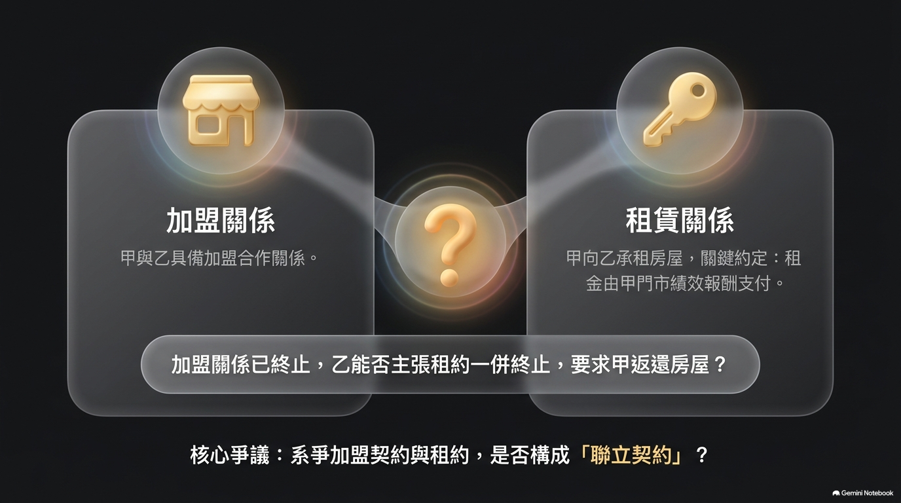
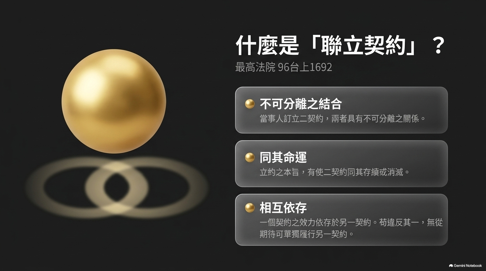
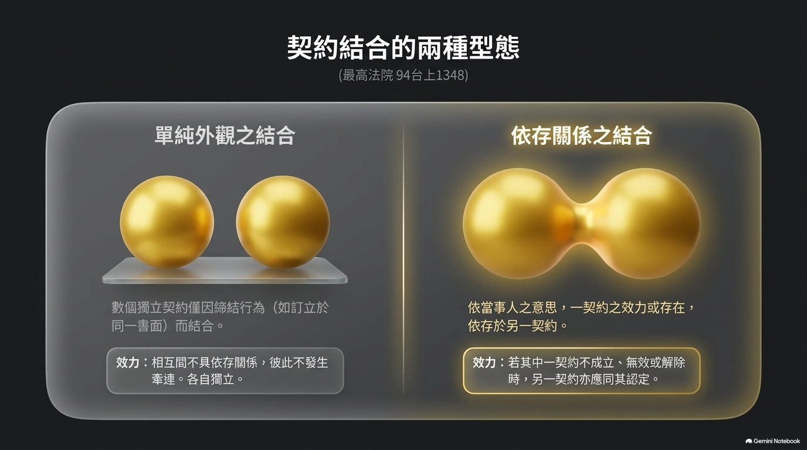
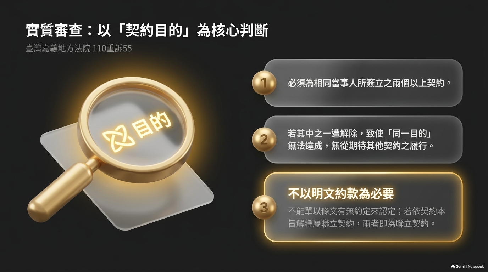
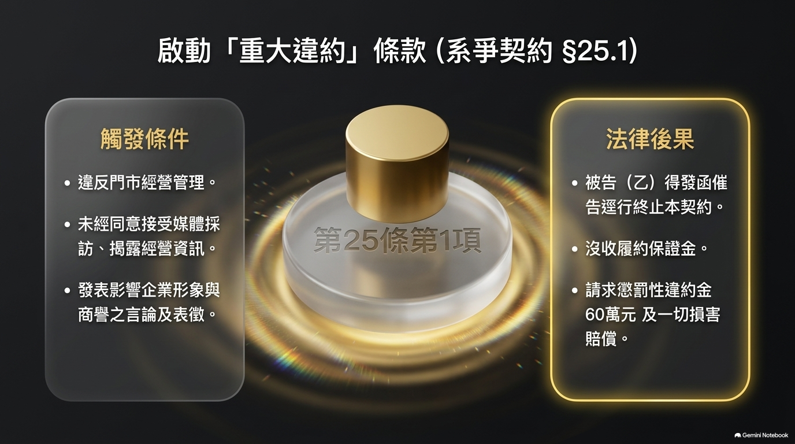
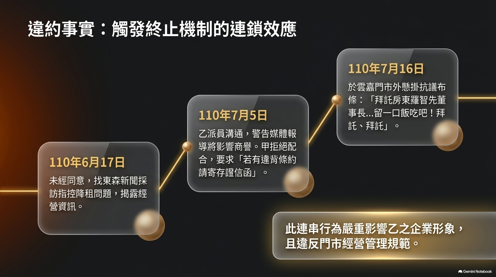
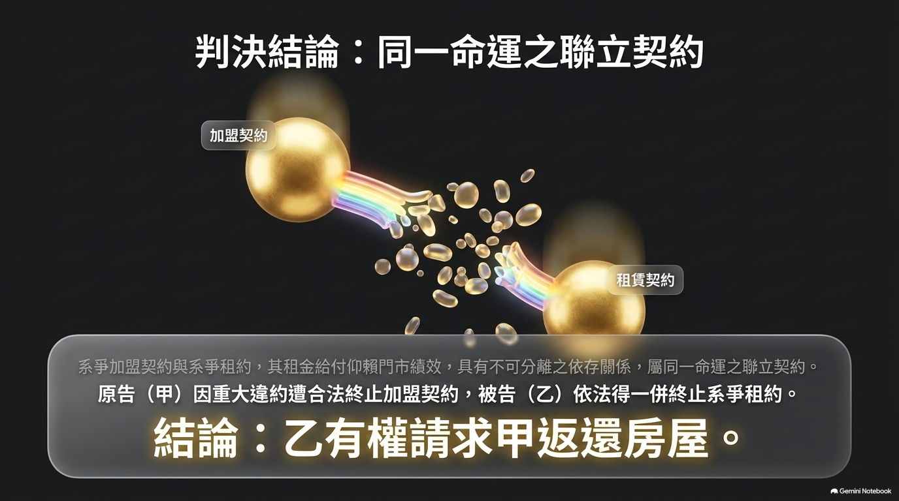
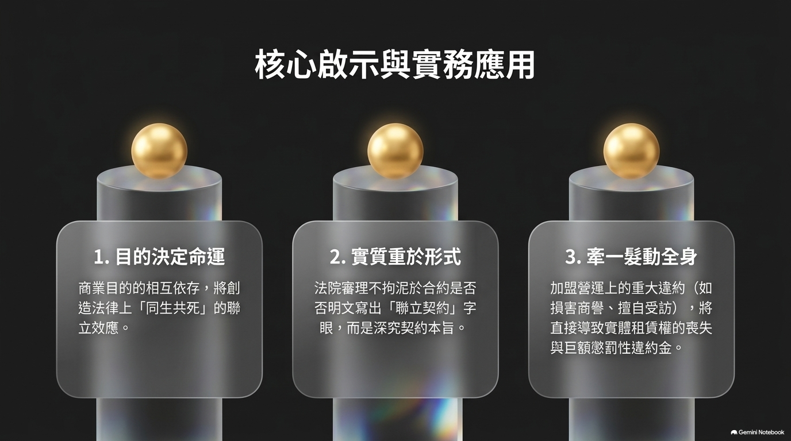

加盟契約與租約是否為聯立契約之實務分析
臺灣嘉義地方法院 110 年度重訴字第 55 號民事判決評析
謝秉錡律師事務所
2026.08.16
謝秉錡律師事務所
2 / 20
為何重要？
加盟主的痛點
• 加盟契約一旦終止，租約命運如何？ • 提前退場是否仍須繼續支付租金？ • 加盟總部能否一併收回門市？
加盟總部的痛點
• 加盟主違約但租約仍存，能否收回門市？ • 提前終止租約之程序與合法性如何？ • 媒體爆料、商譽損害如何即時止血？
💡 聯立契約 — 兩契約命運相繫
判斷加盟契約與租約是否為聯立契約，直接決定加盟糾紛中租約命運與門市點交。
謝秉錡律師事務所
3 / 20
案件事實
當事人
甲（加盟主）與乙（加盟總部）
兩造關係
甲與乙間有加盟關係（加盟契約＝系爭契約） 甲向乙承租房屋以經營門市（租約＝系爭租約） 租金由甲門市每月績效報酬中扣除
事後發展
甲、乙加盟關係終止，乙主張租約亦一併終止，
向甲請求返還房屋。
謝秉錡律師事務所
4 / 20
本案爭點
系爭契約與系爭租約
是否為聯立契約？
衍生問題：若為聯立契約，則加盟關係終止後，租約是否一併消滅？
✅ 法院最終採肯定說 — 詳後述

謝秉錡律師事務所
5 / 20
聯立契約定義
最高法院 96 年度台上字第 1692 號
「所謂聯立契約，乃契約當事人訂立二契約，該二契約具有不可分離之關係而互相結合，即當事人立約之本旨，有使二契約同其存續或消滅，一個契約之效力或存在依存於另一契約，二者同其命運，苟違反其一，無從期待可單獨履行另一契約。」
三個關鍵詞
① 不可分離 — 相互結合 ② 同其命運 — 存續或消滅一致 ③ 無從單獨履行 — 違反其一則無法期待繼續

謝秉錡律師事務所
6 / 20
兩種結合情狀
最高法院 94 年度台上字第 1348 號
單純外觀之結合
數個獨立之契約，僅因締結契約之行為（如訂立一個書面）而結合。
特徵：
• 相互間不具依存關係 • 彼此間不發生任何牽連 • 各契約獨立運作，不互相影響
具有一定依存關係之結合
依當事人之意思，一個契約之效力或存在依存於另一個契約。
特徵：
• 一契約不成立／無效／撤銷／解除 • 另一契約亦應同其認定 • 個別契約是否有效仍應分別判斷

謝秉錡律師事務所
7 / 20
聯立契約三大要件
整合 96 台上 1692、94 台上 1348、嘉義地院 110 重訴 55 三判決
二以上契約
兩個以上之契約，均為相同當事人所簽立
相互依存
契約內容須為相互依存之關係，一方消滅則另一方無法期待履行
目的同一
多數聯立契約之目的即為從事基於同一目的所訂立
三要件全部成立 → 構成聯立契約
少一不可；欠缺則為單純契約結合或混合契約
謝秉錡律師事務所
8 / 20
連帶效果：同其命運
系爭契約
（加盟）
違反/解除/終止
系爭租約
連帶消滅
法律效果
• 其中一契約遭解除／終止，致聯立契約目的無法達成 • 解釋上理應認為其他契約於符合要件之下亦能解除 • 出租人無須受租期中斷之約束，得以一併取回門市
謝秉錡律師事務所
9 / 20
實質認定：從契約目的
嘉義地院 110 重訴 55 判決意旨
「所謂之無從期待，應從契約之目的以觀，倘若多數聯立契約之目的即為從事基於同一目的所訂立，其中之一遭解除，而使目的無法達成者，解釋上理應認為其他契約於符合要件之下亦能解除。」
判斷步驟
辨識締約目的
兩契約是否為達成同一目的？
檢視依存程度
一契約消滅，他契約能否單獨履行？
判定命運共同
綜合認定是否同其存續或消滅
謝秉錡律師事務所
10 / 20
約款明文非必要
「是否為聯立契約，當不以契約約款是否有明文約定為必要，理應回歸觀察各該契約之本質及解釋，不能單以契約條文有無約定即認定相關契約是否為聯立契約。」
— 嘉義地院 110 重訴 55
實務對比
❌ 約款無明文 + 契約無依存關係
即使契約條文未約定，仍可能依本旨解釋為聯立契約。最高法院 96 台上 1692 雖認定兩造租約與讓渡契約當事人不一致，契約性質不同，而非聯立契約 — 但其對法律定義仍具參考價值。
✅ 約款無明文 + 契約本質依存
縱契約條文未明文約定聯立關係，只要契約本質上相互依存，仍應認定為聯立契約。嘉義地院 110 重訴 55 即採此見解。

謝秉錡律師事務所
11 / 20
本案契約第25條第1項
原告（加盟主）有下列情形之一，視為重大違約：
⑴ 門市經營管理違背
原告所提供之商品、服務或門市經營管理違背加盟總部之規定或指示。
⑮ 未經同意揭露經營資訊 / 影響商譽
原告未得被告同意逕自： A. 發表、接受媒體節目採訪或其他方式揭露被告經營資訊 B. 發表影響被告企業形象、商譽之言論、表徵、圖片、影象
法律效果：被告得發函催告逕行終止契約、沒收履約保證金、請求懲罰性違約金 60 萬元及一切損害賠償。

謝秉錡律師事務所
12 / 20
重大違約事實
事實一：媒體採訪
110年6月17日
未經加盟總部同意，
找東森新聞採訪，
指控降租問題，
揭露經營資訊。
✗ 違反第25條第1項第15款A目
（未經同意揭露經營資訊）
事實二：懸掛布條
110年7月16日
在門市外懸掛布條，
「拜託房東羅智先董事長苦民所苦…撐不下去了…留一口飯吃吧！拜託、拜託」
✗ 違反第25條第1項第15款B目
（影響企業形象／商譽言論）

謝秉錡律師事務所
13 / 20
意思表示到達
110年7月17日中午，加盟總部派員至門市宣讀存證信函
民法 §94、§95 對話意思表示之要件
① 對話人為意思表示 ② 相對人了解時，發生效力 ③ 不以相對人實際聽到為必要，祇須處於得了解之狀態 ④ 使者之行為視同本人之行為
法院認定
宣讀過程中，原告負責人雖走動、避開鏡頭，但仍處於「得與被告人員對話之狀態」，被告人員明確告知「加盟約跟租約終止」，意思表示已到達；後續宣讀係後續處理事宜，不影響已到達之效力。
謝秉錡律師事務所
14 / 20
法院判斷重點
① 系爭契約與系爭租約為聯立契約
② 原告違反第25條第1項第15款A、B目之重大違約
③ 被告終止系爭契約及系爭租約意思表示已合法送達
④ 在聯立契約之連帶效果下，租約一併合法終止
⑤ 原告之訴及假執行之聲請均駁回
系爭契約與系爭租約為聯立契約
加盟關係終止，租約一併終止
對乙（加盟總部）
✅ 可向甲（加盟主）
請求返還房屋
對甲（加盟主）
✗ 違反加盟契約重大違約
租約命運同終止
(臺灣嘉義地方法院 110 年度重訴字第 55 號民事判決)

謝秉錡律師事務所
16 / 20
實務建議
對加盟總部／出租人
1. 契約明文化：加盟契約與租約聯立關係，宜明文約定 2. 重大違約條款：明列媒體採訪、布條懸掛等行為樣態 3. 送達程序：採對話表示＋錄音錄影補強事證 4. 履約保證金：明定得逕行沒收，避免事後追索困難
對加盟主／承租人
1. 加盟前評估：租約是否依存於加盟關係？ 2. 爭議處理：避免透過媒體或公開布條表達 3. 陳情管道：寄存證信函申辯，保留行政救濟 4. 律師協助：爭議發生時立即諮詢契約爭議專業

謝秉錡律師事務所
17 / 20
法條索引
民法 §94
對話意思表示
民法 §95 I
非對話意思表示生效
民法 §216
損害賠償範圍
民法 §220 I
故意過失責任
民法 §224
代理人過失責任
民法 §227 I
不完全給付
民法 §231
給付遲延
民法 §423
出租人交付義務
✅ 3 / 3 全部通過
96台上1692
最高法院
✅ 聯立契約定義相符
94台上1348
最高法院
✅ 契約聯立兩種情狀相符
110重訴55
嘉義地院
✅ 個案事實與聯立契約認定相符
所有引用判決均經 Taiwan Legal DB 司法院裁判書系統
逐字全文核實通過，無 AI 幻覺。
詳見隨附《聯立契約的法律性質_核實報告.md》
Hsieh, Ping-Chi Law Firm
聯立契約法律諮詢
加盟契約爭議 • 租賃契約爭議 • 契約聯立爭議 重大違約認定 • 契約解除／終止 • 損害賠償計算
台中市南區工學北路 99 號 • (04) 2265-8115
合約審查｜書狀撰寫｜訴訟代理｜法律諮詢
謝秉錡律師事務所
20 / 20
謝秉錡律師事務所
專業律師團隊
謝秉錡律師
劉靜芬律師
何博彥律師
林育正律師
陳儒學習律師
本簡報由謝秉錡律師事務所製作，引用判決均經 Taiwan Legal DB 核實
簡報版本：v1.0 ｜ 2026-08-16